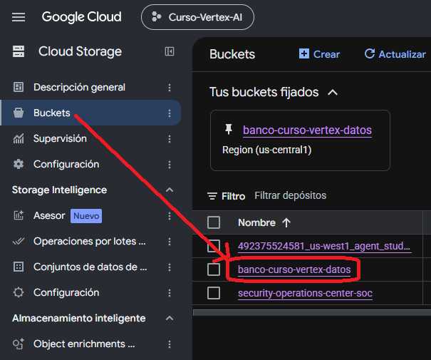

Cloud Storage — conceptos
Cloud Storage es el servicio de almacenamiento de objetos de Google Cloud. En este curso lo utilizaremos para guardar y organizar archivos que después serán utilizados por personas, BigQuery, Gemini o agentes.
1. ¿Qué es Cloud Storage?
Cloud Storage almacena datos como objetos dentro de buckets. Un objeto puede corresponder, por ejemplo, a un CSV, un PDF, un archivo de texto, una imagen u otro contenido que necesitemos conservar y recuperar.

2. ¿Qué es un bucket?
Un bucket es el contenedor básico donde se almacenan los objetos. Todo objeto guardado en Cloud Storage debe pertenecer a un bucket.
Contenedor principal
Un bucket contiene objetos y permite organizarlos y administrar su acceso.
No se anidan
Un bucket no puede estar dentro de otro bucket. La organización interna ocurre mediante nombres de objeto, prefijos o carpetas según el tipo de namespace.
Nombre global
El nombre de un bucket debe ser único a nivel global, no solo dentro de tu proyecto.
Ubicación
Al crear un bucket se define una ubicación para el recurso y sus datos. La ubicación es una decisión que conviene revisar antes de crearlo.
En el curso utilizamos, entre otros recursos, el bucket compartido:
banco-curso-vertex-datos

3. ¿Qué es un objeto?
Un objeto es el contenido almacenado dentro de un bucket. Para trabajar con un objeto necesitamos, como mínimo, distinguir el bucket que lo contiene y el nombre del objeto.
| Elemento | Ejemplo |
|---|---|
| Bucket | banco-curso-vertex-datos |
| Nombre del objeto | alumnos/prueba-tipo/fuentes/criterio_revision_operaciones_digitales.pdf |
| URI completa | gs://banco-curso-vertex-datos/alumnos/prueba-tipo/fuentes/criterio_revision_operaciones_digitales.pdf |
El nombre del objeto puede contener barras /. En la consola esas barras pueden hacer que la información se vea organizada como una estructura de carpetas.
4. Carpetas y prefijos
Es importante no asumir que Cloud Storage funciona exactamente igual que el sistema de archivos de un computador. En muchos buckets, las “carpetas” que ves en la consola son una representación conveniente basada en el nombre del objeto.
Por ejemplo, este nombre:
alumnos/prueba-tipo/fuentes/documento.pdf
puede mostrarse visualmente como:
5. Namespace plano y namespace jerárquico
Actualmente Cloud Storage puede trabajar con namespace plano o con namespace jerárquico. La diferencia importa porque cambia la naturaleza de las carpetas.
Namespace plano
Los objetos se almacenan directamente bajo el bucket. La consola puede simular carpetas interpretando las barras / del nombre como delimitadores.
Namespace jerárquico
Las carpetas forman parte real de una estructura jerárquica del bucket y tienen semántica propia de directorio.
6. Metadatos
Los objetos y buckets tienen metadatos: información que describe propiedades del recurso. Los metadatos se almacenan como pares clave-valor y ayudan a identificar o controlar cómo debe manejarse un objeto.
| Ejemplo de metadato | Qué indica |
|---|---|
| Nombre | Cómo se identifica el objeto dentro del bucket. |
| Tamaño | Cuántos bytes ocupa el contenido. |
| Tipo de contenido | Cómo se describe el formato del contenido, por ejemplo PDF o texto. |
| Storage class | Clase de almacenamiento asociada al objeto. |
| Fecha de creación / actualización | Información temporal sobre el objeto y sus cambios. |
| Generation | Identificador de una versión concreta del objeto. |
No todos los metadatos se pueden modificar de la misma forma: algunos son editables, otros se definen al crear o reescribir el objeto y otros son solo de lectura.
7. Rutas gs://
Una forma habitual de identificar recursos de Cloud Storage es mediante una URI que comienza con gs://.
Ejemplo de la Prueba Tipo:
gs://banco-curso-vertex-datos/alumnos/prueba-tipo/fuentes/criterio_revision_operaciones_digitales.pdf
Esta URI nos permite expresar de forma inequívoca qué bucket y qué objeto queremos utilizar. Más adelante la usaremos para entregar al agente la ubicación exacta de un archivo.
8. Modelo mental mínimo
Si recuerdas esta estructura, ya tienes lo esencial para continuar:
9. ¿Dónde aparece esto en la Prueba Tipo?
Cloud Storage cumple dos funciones distintas dentro de la evaluación:
Fuente común
El PDF original se encuentra dentro de la zona común prueba-tipo/fuentes/.
Espacio del alumno
Cada alumno trabaja dentro de prueba-tipo/alumnos/alumno-XX/, donde guarda insumos, resultados e informe.
- Google Cloud — About Cloud Storage buckets
- Google Cloud — About Cloud Storage objects
- Google Cloud — Folder types in Cloud Storage
- Google Cloud — Object metadata
- Google Cloud — Syntax for Cloud Storage resource URIs
La guía de Clase 2 se utiliza como referencia pedagógica para el nivel del curso y para mantener la secuencia bucket → objeto → carpeta/prefijo → URI.